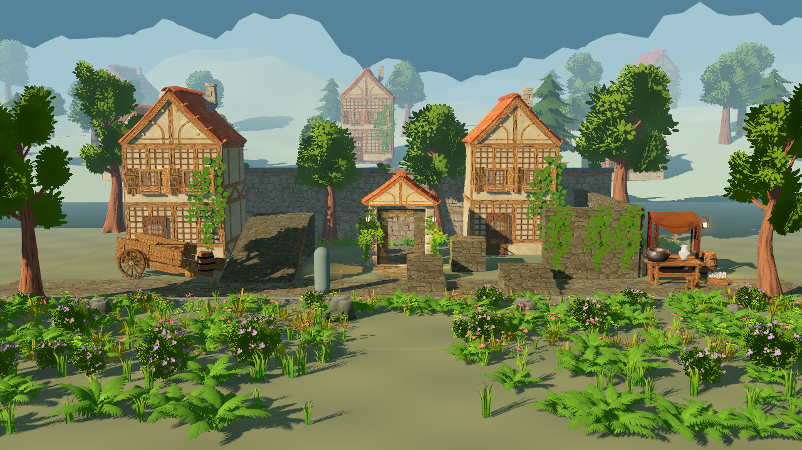
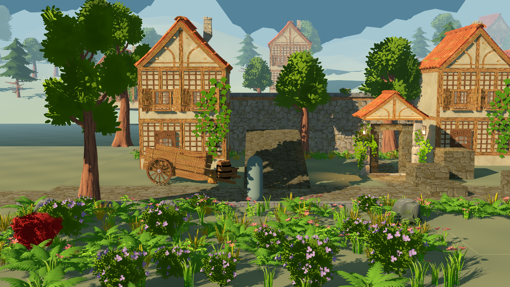
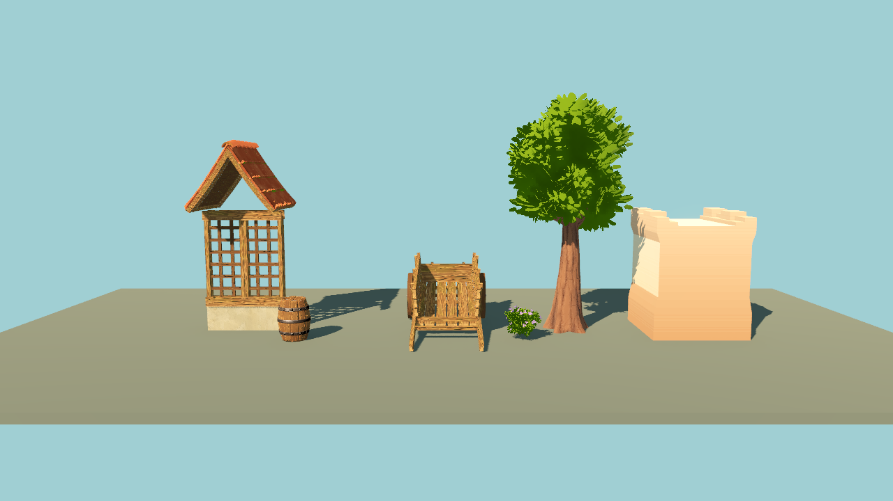

ENVIRONMENT ART STUDY · 2026 / 11 / 22
横向 2.5D · 山谷驿站
按照你选定的横向视角，试做一个保留真实纵深的室外局部。建筑、道具和植物使用免费素材；侧面镜头把原白盒组织为活动区、近处花草、背后的村落与山地。
供判断方向的初稿 · 原 17 个物理构件保留，10 项必要通行检查通过。角色仍为比例占位；题材与美术完成度尚待你看图判断。

这次主要试什么
- 侧面透视与横向跟随，让近处植物、活动区与远山产生真实视差。
- 瓦片、木构、石路和工作道具在侧视距离下能否保持细节。
- 原来的门洞、坡道、跳台与台阶继续存在，W / S 仍可进入纵深。
本次是立体场景的侧视表达，没有加入像素化角色或全屏像素滤镜。
看图后的修正与剩余问题
- 修正首稿远景地形反面和远处建筑的落地，保留完整背景。
- 把工作台移到原墙体外可见的位置，并补前景植被与墙面藤蔓。
- 降低环境光，保留暖色立面、冷色远景与接触阴影。
目前建筑轮廓与木格重复仍明显，前景植物的密度变化、侧视下原跳台的融合仍需细化。素材细节和层次不能等同于《三位一体》的完成度。
实际横移与镜头跟随
从同一次游戏运行保存的三个关键帧。移动角色沿原地面横向行走，镜头跟随 X 轴；前后层的相对位置随之变化。
这是关键帧，不是连续视频。灰色胶囊为复用的测试角色。

参考与素材取舍
参考 《Trine 5》官方环境截图中的空间关系：图 02 的森林—建筑—远山层次，以及图 03 的石路、门道与植物衔接。题材“山谷驿站”是本次提案，原作截图版权属于原权利方，未作为场景素材分发。
| 资产来源 | 本稿使用与限制 |
|---|---|
| Quaternius Medieval Village | 建筑、瓦顶、马车、藤蔓；实际使用已下载的 CC0 Standard 免费子集。 |
| Quaternius Fantasy Props | 工作台、陶器、木桶、货物、灯具；未使用付费场景或专有 shader。 |
| Quaternius Stylized Nature | 树、草、花与石块；保留源叶片 alpha，背景地形为本稿补建。 |
| Kenney Castle · 试装对照 | 纯色墙面与主素材的细节密度不一致，未进入主场景。 |
查看素材试装实图

打开工程、操作与验证范围
Godot 4.7.2 导入 experiments/sideview-2p5d-study-20261122/project/project.godot，F5 打开 waystation.tscn。
A / D 横向移动，W / S 纵深移动，Space 跳跃，Shift 奔跑，R 复位；4 返回跟随镜头，5 / 6 / 7 / 8 切整体、近景、右侧过渡与结构巡检。此工程不需要 MCP 插件。
原17构件的变换与碰撞检查，以及门洞双向、坡道登顶、3个跳台和4级台阶落脚检查通过。验证限 macOS Metal Forward+，未测试其他后端，也未声称整张地图可游玩或最终美术验收。